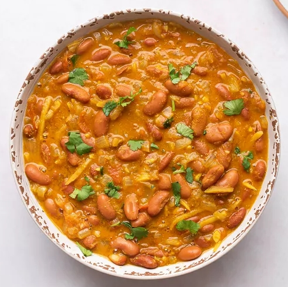

Rajma Dal: Red Kidney Bean Curry
Rajma dal is a red kidney bean curry that is a popular dish in northern India, though it's enjoyed throughout the country. It is a tasty vegetarian recipe that cooks the beans in a spicy masala paste featuring ginger, garlic, chilies, and tomatoes.
In addition to various meats and vegetables, Indian curries can be made using a variety of legumes, including chickpeas, lentils, and kidney beans. They make a filling vegetarian or vegan main dish or can be served as part of a big meal.
Ingredients:
- 2 tablespoons vegetable oil
- 1 teaspoon cumin seeds
- 2 medium onions, finely chopped
- 2 inches ginger, peeled and julienned
- 6 cloves garlic, minced
- 2 green chilies, stemmed and finely chopped
- 2 large tomatoes,cored and chopped into 1-inch cubes
- 2 teaspoons ground coriander
- 1 teaspoon ground cumin
- 1 teaspoon ground masala
- 1/4 teaspoon ground turmeric
- 3 cups red kidney beans
- 2 cups water
- 1 pinch asafoetida powder or hing
- 1/4 teaspoon salt or to taste
- Chopped cilantro for garnish
- Cooked rice, kachumber salad, suggested for serving
Steps:
- In a deep pan, heat the oil and add the cumin seeds. When they stop sizzling, add the onions and fry until soft and translucent, about 5 minutes.
- Add the ginger and garlic and fry for 2 minutes.
- Add the green chilies, tomatoes, coriander, cumin, garam masala, and turmeric, and fry until the oil separates from the masala, about 10 minutes.
- Add the red kidney beans, warm water, and asafetida, as well as the salt to taste. Cook until the beans are soft and the sauce has reduced a bit, to your desired consistency, about 25 minutes.
- Mash some of the beans roughly to thicken the sauce.
- Garnish with coriander and serve hot with rice.
Tips:
- For an even better curry, cook kidney beans from dried instead of using canned beans. Soak the dried beans in water overnight and drain. Add the soaked beans to a pot, covering with about an inch of water. Bring to a low simmer and check after about an hour, adding more water as needed. The beans are done when they are tender.
- For less intense heat, seed the chili peppers before chopping.
- Serve with your choice of store-bought or homemade pickles.